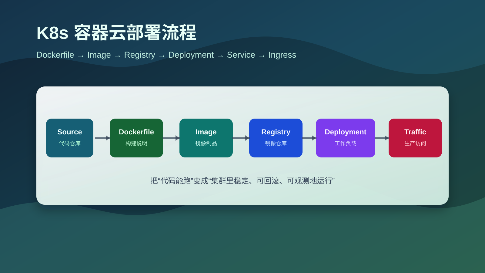

K8s Container Cloud Deployment: From Dockerfile Image Build to Release
When deploying services to an internal Kubernetes container cloud platform, the console form is only the final step. The real deployment path is: the code builds reliably, the Dockerfile produces a correct image, the image runs locally, the image is pushed to a registry, and Kubernetes can pull and run it with healthy probes.

K8s container cloud deployment workflowThis article follows the order of a typical internal platform deployment. It does not depend on a specific vendor console. If the platform is built on Kubernetes, most fields map to the same underlying resources.
1. What to confirm before deployment
Write down the deployment inputs before touching the platform page.
| Item | What to confirm | Example |
|---|---|---|
| Startup command | How the service starts and which port it listens on | java -jar app.jar, ./server, npm start, port 8080 |
| Dockerfile | Whether the project has a repeatable image build | Dockerfile, .dockerignore |
| Registry | Registry address, project path, credentials | registry.example.com/team/order-api |
| Namespace | Target project or Kubernetes namespace | team-dev, team-test, team-prod |
| Configuration | Runtime config and secrets | APP_ENV, database URL, tokens |
| Network exposure | Internal-only or external access | ClusterIP, Ingress, Route, gateway |
| Resources | CPU, memory, storage, replicas | requests: 200m/256Mi, limits: 1/1Gi |
| Health checks | Endpoint used by the platform to judge health | /healthz, /actuator/health |
Most platform UI fields are wrappers around Kubernetes objects:
| Platform term | Kubernetes object | Purpose |
|---|---|---|
| Application / workload | Deployment |
Manages replicas, rolling updates, and rollback |
| Instance / container group | Pod |
Smallest unit that runs containers |
| Service | Service |
Stable in-cluster endpoint for Pods |
| Route / domain / gateway | Ingress or platform entry object |
External HTTP/HTTPS entry |
| Configuration | ConfigMap |
Non-sensitive configuration |
| Secret | Secret |
Passwords, tokens, certificates |
| Registry credential | imagePullSecret |
Allows nodes to pull from private registries |
The platform hides some YAML, but Kubernetes is still the execution layer underneath.
2. The key part: building an image from Dockerfile
Kubernetes does not run source code directly. A Deployment points to an image, the node pulls that image from a registry, and the container runtime starts it as a container.
Many deployment failures actually start at the image layer:
- the build artifact was not copied into the final image;
- the container startup command is wrong;
- the service listens on
127.0.0.1instead of0.0.0.0; - required runtime config was neither baked into the image nor injected by the platform;
- the image architecture does not match cluster nodes;
- the private registry address, tag, or credential is wrong.
Dockerfile instructions you should recognize
| Instruction | Purpose | Note |
|---|---|---|
FROM |
Selects the base image | Prefer explicit versions over latest |
WORKDIR |
Sets the working directory | Affects later COPY, RUN, and CMD |
COPY |
Copies files from build context | Prefer COPY unless ADD is truly needed |
RUN |
Runs commands during image build | Used for dependency install and compilation |
ARG |
Build-time variable | Not normally kept as runtime env |
ENV |
Runtime environment default | Do not store passwords here |
EXPOSE |
Documents the container port | It does not publish the port by itself |
USER |
Selects runtime user | Avoid running production containers as root |
ENTRYPOINT |
Fixed executable entry | Good for the main process |
CMD |
Default command or arguments | Can be overridden by docker run |
The final . in this command is the build context:
|
|
Everything inside that context can be sent to the Docker builder, so add a .dockerignore:
|
|
This improves build speed, reduces image risk, and helps Docker layer caching behave predictably.
A practical image build flow
First confirm the project builds without Docker:
|
|
Dockerfile should make a stable build repeatable. It should not hide a broken local build.
Go service example
|
|
Useful details:
| Detail | Reason |
|---|---|
Copy go.mod and go.sum before source files |
Dependency download can use cache |
Set CGO_ENABLED=0 GOOS=linux GOARCH=amd64 |
Produces a Linux amd64 binary for common cluster nodes |
| Use a separate runtime stage | Keeps source and build cache out of the final image |
Run as app user |
Avoids root runtime by default |
Build and run locally:
|
|
If this local check fails, fix the image before touching Kubernetes. Check the actual port, bind address, startup command, health endpoint, and required environment variables.
Java Spring Boot example
|
|
If the service needs JVM options, keep them configurable:
|
|
Then inject runtime values from the platform:
|
|
Remember that JAVA_OPTS only works if the entrypoint actually reads it.
Node.js service example
|
|
For a static frontend, the runtime image can be Nginx instead of Node:
|
|
Image tag strategy
Avoid using only latest in production. It is hard to trace and hard to rollback.
Better options:
|
|
Example:
|
|
At minimum, keep the Git SHA:
|
|
If the platform supports image digests, production can pin an immutable reference:
|
|
Tags are readable; digests are immutable.
Match image architecture with cluster nodes
If the image is built on ARM but the cluster runs amd64 nodes, the Pod may fail with exec format error.
Build amd64 explicitly:
|
|
Push to registry
Check the local image:
|
|
Log in:
|
|
Retag if needed:
|
|
Push:
|
|
The cluster will not use images stored only in your local Docker daemon. A real platform pulls from the registry.
3. Create the workload on the platform
Once the image exists in the registry, create the workload.
| Field | Recommended value | Note |
|---|---|---|
| Application name | order-api |
Keep it close to the service name |
| Namespace | team-test / team-prod |
Separate environments and teams |
| Image | registry.example.com/pay/order-api:git-a18c3f2 |
Use the pushed image |
| Replicas | 1 for test, 2+ for production |
Production needs multiple replicas for rolling updates |
| Container port | 8080 |
Must match the real listening port |
| Environment variables | Platform form or ConfigMap | Do not bake environment differences into the image |
| Secrets | Secret | Do not put passwords in Dockerfile |
| CPU/memory | Start small, then tune | requests for scheduling, limits for upper bounds |
| Health check | /healthz or service health endpoint |
Readiness controls traffic routing |
| Pull credential | Registry secret | Required for private registries |
A typical Deployment:
|
|
The three most important fields are image, containerPort, and readinessProbe. If readiness does not pass, the Pod can be running but still receive no traffic.
4. Configure service entry
Deployment makes Pods run. Service and Ingress make them reachable.
Internal access usually uses a Service:
|
|
Other in-cluster services can call:
|
|
External HTTP/HTTPS access usually uses Ingress, Route, or a company gateway:
|
|
In a platform console this may be called domain, route, layer-7 load balancer, or application entry. The core fields are still host, path, backend Service, port, and certificate.
5. Validate release and prepare rollback
If YAML deployment is supported:
|
|
Useful checks:
|
|
Rollback:
|
|
Platform consoles usually expose the same behavior as version history, rollback, or redeploy actions.
6. Common troubleshooting table
| Symptom | Likely cause | Where to look |
|---|---|---|
ImagePullBackOff |
Wrong image, missing tag, registry permission issue | Registry, imagePullSecret, Pod events |
ErrImagePull |
Node failed to pull image | kubectl describe pod |
CrashLoopBackOff |
Container starts and exits repeatedly | kubectl logs --previous, startup command, env vars |
Running but 0/1 Ready |
Readiness probe fails | Health endpoint, port, timeout |
| External 404 | Ingress host or path mismatch | Ingress and gateway rules |
| External 502/503 | Service has no ready endpoint | Pod readiness, Service selector |
| Database connection failure | Secret, network policy, allowlist, DNS | Env vars, credentials, network |
OOMKilled |
Memory exceeded limit | Raise limit, inspect memory usage |
exec format error |
Image architecture mismatch | Rebuild with buildx --platform linux/amd64 |
| New image not picked up | Same tag reused and pull policy did not force pull | Use a new tag or adjust imagePullPolicy |
Recommended troubleshooting order:
7. Pre-release checklist
| Check | Pass criteria |
|---|---|
| Dockerfile is repeatable | docker build works on another machine or CI |
| Image runs locally | docker run passes the health check |
| Tag is traceable | Tag includes version, build number, or Git SHA |
| Image is pushed | The platform can pull it from the registry |
| Config is not baked into image | Environment differences use ConfigMap / Secret |
| Secrets are not in Dockerfile | No password in ENV, source, or image layers |
| Resources are set | Reasonable requests and limits exist |
| Probes are set | Readiness and liveness endpoints work |
| Service selector is correct | Service has Pod endpoints |
| Entry route is verified | Domain, path, certificate, gateway are correct |
| Rollback is clear | Previous image tag or Deployment revision is known |
| Logs and metrics are available | Operators can inspect runtime behavior after release |
Summary
The deployment path can be summarized as:
Use Dockerfile to turn the service into a runnable, traceable, pushable image; then let Kubernetes manage replicas with Deployment, provide stable access with Service, and route external traffic through Ingress or a platform gateway.
Four habits make this process much more reliable:
- run the image locally before pushing it;
- use a unique tag for every release instead of relying on
latest; - inject configuration and secrets from the platform instead of baking them into the image;
- prepare health checks, logs, and rollback before release.
Once this chain is stable, deploying through a container cloud platform becomes a standardized delivery workflow instead of trial and error in a web form.